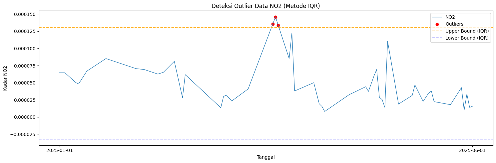
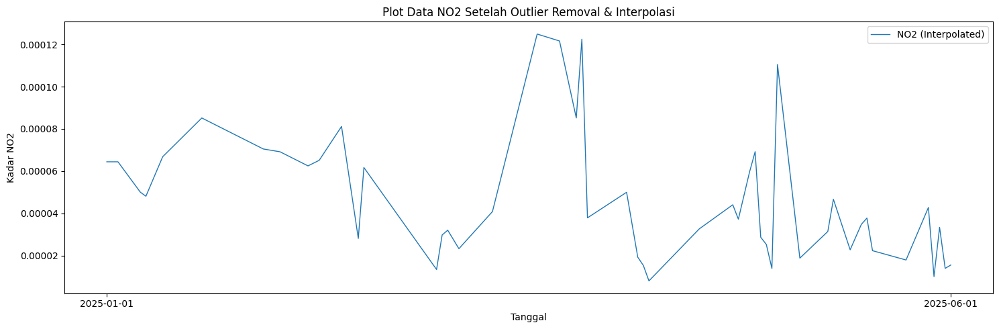
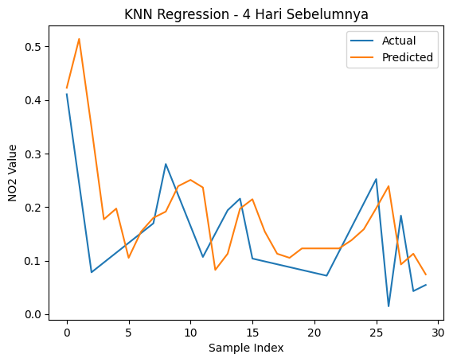
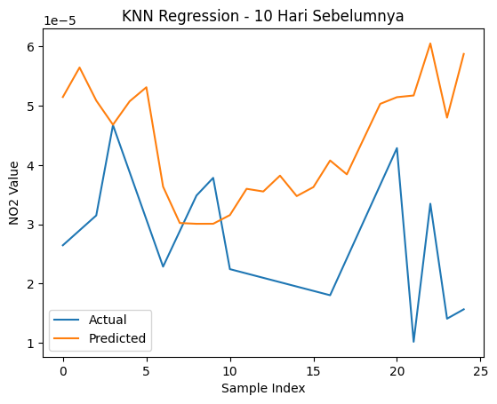

#Latar Belakang Peningkatan aktivitas industri, transportasi, serta pertumbuhan populasi yang pesat telah menyebabkan peningkatan signifikan terhadap tingkat pencemaran udara di berbagai wilayah. Salah satu polutan udara utama yang menjadi perhatian adalah Nitrogen Dioksida (NO₂), yaitu gas beracun yang dihasilkan terutama dari proses pembakaran bahan bakar fosil seperti kendaraan bermotor, pembangkit listrik, dan kegiatan industri. NO₂ memiliki dampak serius terhadap kesehatan manusia, seperti gangguan pernapasan, iritasi paru-paru, serta memperburuk penyakit asma dan bronkitis. Selain itu, NO₂ juga berkontribusi terhadap pembentukan hujan asam dan penurunan kualitas lingkungan secara keseluruhan.
#1. Pengumpulan Data
Pertama kita akan mengumpulkan data Time Series Harian kadar NO2 di daerah Bangkalan. Pengumpulan data dari sumber website https://dataspace.copernicus.eu/ , buat akun terlebih dahulu di website copernicus tersebut.
Dokumentasi cara pengambilan data di https://documentation.dataspace.copernicus.eu/notebook-samples/openeo/NO2Covid.html .
Untuk menuliskan code Python untuk mengambil data, silahkan kunjungi halaman https://dataspace.copernicus.eu/analyse/jupyterlab, klik Access JupyterLab, scroll kebawah sedikit …, lalu pilih Python 3 (ipykernel)
pip install openeo
Requirement already satisfied: openeo in /usr/local/python/3.12.1/lib/python3.12/site-packages (0.50.0)
Requirement already satisfied: requests>=2.26.0 in /home/codespace/.local/lib/python3.12/site-packages (from openeo) (2.32.5)
Requirement already satisfied: urllib3>=1.9.0 in /home/codespace/.local/lib/python3.12/site-packages (from openeo) (2.5.0)
Requirement already satisfied: shapely>=1.6.4 in /usr/local/python/3.12.1/lib/python3.12/site-packages (from openeo) (2.1.2)
Requirement already satisfied: numpy>=1.17.0 in /usr/local/python/3.12.1/lib/python3.12/site-packages (from openeo) (2.4.2)
Requirement already satisfied: xarray<2025.01.2,>=0.12.3 in /usr/local/python/3.12.1/lib/python3.12/site-packages (from openeo) (2025.1.1)
Requirement already satisfied: pandas<3.0.0,>0.20.0 in /usr/local/python/3.12.1/lib/python3.12/site-packages (from openeo) (2.3.3)
Requirement already satisfied: pystac>=1.5.0 in /usr/local/python/3.12.1/lib/python3.12/site-packages (from openeo) (1.14.3)
Requirement already satisfied: deprecated>=1.2.12 in /usr/local/python/3.12.1/lib/python3.12/site-packages (from openeo) (1.3.1)
Requirement already satisfied: geopandas>=0.14 in /usr/local/python/3.12.1/lib/python3.12/site-packages (from openeo) (1.1.3)
Requirement already satisfied: python-dateutil>=2.8.2 in /home/codespace/.local/lib/python3.12/site-packages (from pandas<3.0.0,>0.20.0->openeo) (2.9.0.post0)
Requirement already satisfied: pytz>=2020.1 in /usr/local/python/3.12.1/lib/python3.12/site-packages (from pandas<3.0.0,>0.20.0->openeo) (2026.2)
Requirement already satisfied: tzdata>=2022.7 in /home/codespace/.local/lib/python3.12/site-packages (from pandas<3.0.0,>0.20.0->openeo) (2025.2)
Requirement already satisfied: packaging>=23.2 in /home/codespace/.local/lib/python3.12/site-packages (from xarray<2025.01.2,>=0.12.3->openeo) (25.0)
Requirement already satisfied: wrapt<3,>=1.10 in /usr/local/python/3.12.1/lib/python3.12/site-packages (from deprecated>=1.2.12->openeo) (2.2.1)
Requirement already satisfied: pyogrio>=0.7.2 in /usr/local/python/3.12.1/lib/python3.12/site-packages (from geopandas>=0.14->openeo) (0.12.1)
Requirement already satisfied: pyproj>=3.5.0 in /usr/local/python/3.12.1/lib/python3.12/site-packages (from geopandas>=0.14->openeo) (3.7.2)
Requirement already satisfied: certifi in /home/codespace/.local/lib/python3.12/site-packages (from pyogrio>=0.7.2->geopandas>=0.14->openeo) (2025.11.12)
Requirement already satisfied: six>=1.5 in /home/codespace/.local/lib/python3.12/site-packages (from python-dateutil>=2.8.2->pandas<3.0.0,>0.20.0->openeo) (1.17.0)
Requirement already satisfied: charset_normalizer<4,>=2 in /home/codespace/.local/lib/python3.12/site-packages (from requests>=2.26.0->openeo) (3.4.4)
Requirement already satisfied: idna<4,>=2.5 in /home/codespace/.local/lib/python3.12/site-packages (from requests>=2.26.0->openeo) (3.11)
Note: you may need to restart the kernel to use updated packages.
import openeo
connection = openeo.connect("openeo.dataspace.copernicus.eu").authenticate_oidc()
[##################################---] ⌛ Authorization pending---------------------------------------------------------------------------
KeyboardInterrupt Traceback (most recent call last)
Cell In[3], line 1
----> 1 connection = openeo.connect("openeo.dataspace.copernicus.eu").authenticate_oidc()
File /usr/local/python/3.12.1/lib/python3.12/site-packages/openeo/rest/connection.py:689, in Connection.authenticate_oidc(self, provider_id, client_id, client_secret, store_refresh_token, use_pkce, display, max_poll_time)
685 _log.info("Trying device code flow.")
686 authenticator = OidcDeviceAuthenticator(
687 client_info=client_info, use_pkce=use_pkce, display=display, max_poll_time=max_poll_time
688 )
--> 689 con = self._authenticate_oidc(
690 authenticator,
691 provider_id=provider_id,
692 store_refresh_token=store_refresh_token,
693 # TODO: expose `auto_renew_from_refresh_token` directly as option instead of reusing `store_refresh_token` arg?
694 auto_renew_from_refresh_token=store_refresh_token,
695 )
696 print("Authenticated using device code flow.")
697 return con
File /usr/local/python/3.12.1/lib/python3.12/site-packages/openeo/rest/connection.py:405, in Connection._authenticate_oidc(self, authenticator, provider_id, store_refresh_token, auto_renew_from_refresh_token, fallback_refresh_token, oidc_auth_renewer)
401 """
402 Authenticate through OIDC and set up bearer token (based on OIDC access_token) for further requests.
403 """
404 request_refresh_token = store_refresh_token or (not oidc_auth_renewer and auto_renew_from_refresh_token)
--> 405 tokens = authenticator.get_tokens(request_refresh_token=request_refresh_token)
406 _log.info("Obtained tokens: {t}".format(t=[k for k, v in tokens._asdict().items() if v]))
408 refresh_token = tokens.refresh_token or fallback_refresh_token
File /usr/local/python/3.12.1/lib/python3.12/site-packages/openeo/rest/auth/oidc.py:928, in OidcDeviceAuthenticator.get_tokens(self, request_refresh_token)
926 while elapsed() <= self._max_poll_time:
927 poll_ui.show_progress()
--> 928 time.sleep(sleep)
930 if elapsed() >= next_poll:
931 log.debug(
932 f"Doing {self.grant_type!r} token request {token_endpoint!r} with post data fields {list(post_data.keys())!r} (client_id {self.client_id!r})"
933 )
KeyboardInterrupt:
aoi = {
"type": "FeatureCollection",
"features": [
{
"type": "Feature",
"properties": {},
"geometry": {
"type": "Polygon",
"coordinates": [
[
[112.780, -7.228],
[112.785, -7.228],
[112.785, -7.232],
[112.780, -7.232],
[112.780, -7.228]
]
]
}
}
]
}
s5post = connection.load_collection(
"SENTINEL_5P_L2",
temporal_extent=["2025-01-01", "2026-06-01"],
spatial_extent={
"west": 112.780,
"south": -7.232,
"east": 112.785,
"north": -7.228
},
bands=["NO2"],
)
# Agregasi harian untuk menghindari data ganda per hari
s5p_no2_daily = s5post.aggregate_temporal_period(reducer="mean", period="day")
# Agregasi spasial untuk menghasilkan data deret waktu (timeseries) rata-rata area
s5p_no2_aoi = s5p_no2_daily.aggregate_spatial(reducer="mean", geometries=aoi)
job = s5post.execute_batch(title="NO2 in bulak setro", outputfile="NO2bulaksetro.nc")
0:00:00 Job 'j-260603012940492893528fd051228bf9': send 'start'
0:00:18 Job 'j-260603012940492893528fd051228bf9': queued (progress 0%)
0:00:23 Job 'j-260603012940492893528fd051228bf9': queued (progress 0%)
0:00:29 Job 'j-260603012940492893528fd051228bf9': queued (progress 0%)
0:00:38 Job 'j-260603012940492893528fd051228bf9': queued (progress 0%)
0:00:48 Job 'j-260603012940492893528fd051228bf9': queued (progress 0%)
0:01:00 Job 'j-260603012940492893528fd051228bf9': queued (progress 0%)
0:01:16 Job 'j-260603012940492893528fd051228bf9': queued (progress 0%)
0:01:35 Job 'j-260603012940492893528fd051228bf9': running (progress N/A)
0:01:59 Job 'j-260603012940492893528fd051228bf9': running (progress N/A)
0:02:29 Job 'j-260603012940492893528fd051228bf9': running (progress N/A)
0:03:07 Job 'j-260603012940492893528fd051228bf9': running (progress N/A)
0:03:54 Job 'j-260603012940492893528fd051228bf9': running (progress N/A)
0:04:52 Job 'j-260603012940492893528fd051228bf9': running (progress N/A)
0:05:52 Job 'j-260603012940492893528fd051228bf9': finished (progress 100%)
pip install netCDF4
Collecting netCDF4
Downloading netcdf4-1.7.4-cp311-abi3-manylinux_2_27_x86_64.manylinux_2_28_x86_64.whl.metadata (2.1 kB)
Collecting cftime (from netCDF4)
Downloading cftime-1.6.5-cp312-cp312-manylinux2014_x86_64.manylinux_2_17_x86_64.whl.metadata (8.7 kB)
Requirement already satisfied: certifi in /usr/local/lib/python3.12/dist-packages (from netCDF4) (2026.5.20)
Requirement already satisfied: numpy>=1.21.2 in /usr/local/lib/python3.12/dist-packages (from netCDF4) (2.0.2)
Downloading netcdf4-1.7.4-cp311-abi3-manylinux_2_27_x86_64.manylinux_2_28_x86_64.whl (10.1 MB)
━━━━━━━━━━━━━━━━━━━━━━━━━━━━━━━━━━━━━━━━ 10.1/10.1 MB 53.0 MB/s eta 0:00:00
?25hDownloading cftime-1.6.5-cp312-cp312-manylinux2014_x86_64.manylinux_2_17_x86_64.whl (1.6 MB)
━━━━━━━━━━━━━━━━━━━━━━━━━━━━━━━━━━━━━━━━ 1.6/1.6 MB 80.6 MB/s eta 0:00:00
?25hInstalling collected packages: cftime, netCDF4
Successfully installed cftime-1.6.5 netCDF4-1.7.4
import netCDF4
file_path = "NO2bulaksetro.nc"
ds = netCDF4.Dataset(file_path)
# Lihat seluruh variabel yang tersedia
print("📦 Variabel dalam file:")
print(ds.variables.keys())
# dict_keys(['t', 'x', 'y', 'crs', 'NO2'])
# Ambil NO2
no2 = ds.variables["NO2"][:]
# Ambil Time
time = ds.variables["t"][:]
# Konversi waktu ke format tanggal jika punya atribut 'units'
try:
time_units = ds.variables["t"].units
dates = netCDF4.num2date(time, units=time_units)
except Exception:
dates = time # fallback kalau tidak ada units
# Tampilkan struktur data NO2
print(type(no2))
# type <class 'numpy.ma.core.MaskedArray'>
print(len(no2))
# banyaknya data record NO2 725
print(len(no2[0]))
# panjang data perbaris 9
print(len(no2[0][0]))
# panjang perdata 8
print(no2[0][0][0])
# 3.7701793e-05
📦 Variabel dalam file:
dict_keys(['t', 'x', 'y', 'crs', 'NO2'])
<class 'numpy.ma.MaskedArray'>
514
1
1
--
import numpy as np
import pandas as pd
# Interpolasi Linear
no2_filled = np.zeros_like(no2)
# Untuk jaga-jaga jika terdapat '--' tidak berubah menjadi 0
no2_filled = no2_filled.filled(0)
# loop tiap grid (y,x)
for i in range(no2.shape[1]): # 9 baris
for j in range(no2.shape[2]): # 8 kolom
series = pd.Series(no2[:, i, j])
no2_filled[:, i, j] = series.interpolate(method='linear', limit_direction='both').to_numpy()
new_dates = []
new_no2 = []
for i in range(len(dates)):
# ubah format datetime
new_date = dates[i].strftime('%Y-%m-%d')
new_dates.append(new_date)
new_no2.append(np.mean(no2_filled[i]))
df = pd.DataFrame({
"date": dates,
"NO2": new_no2
})
# Simpan ke CSV
df.to_csv("NO2_bulaksetro_timeseries.csv", index=False)
import pandas as pd
import numpy as np
df = pd.read_csv("NO2_bulaksetro_timeseries.csv")
# Pastikan kolom 'date' bertipe datetime
df['date'] = pd.to_datetime(df['date'])
# Buat rentang tanggal lengkap
start_date = "2025-01-01"
end_date = "2025-06-01"
full_range = pd.date_range(start=start_date, end=end_date, freq='D')
# Cek tanggal yang hilang
missing_dates = full_range.difference(df['date'])
print(f"Jumlah hari missing: {len(missing_dates)}")
print("Daftar tanggal missing:")
print(missing_dates)
Jumlah hari missing: 2
Daftar tanggal missing:
DatetimeIndex(['2025-01-30', '2025-01-31'], dtype='datetime64[ns]', freq='D')
import pandas as pd
# Pastikan datetime dan sorting
df['date'] = pd.to_datetime(df['date'])
df = df.sort_values('date')
# Buat rentang tanggal lengkap
full_range = pd.date_range(start="2025-01-01", end="2025-06-01", freq='D')
# Reindex agar tanggal yang hilang muncul sebagai NaN
df = df.set_index('date').reindex(full_range)
df.index.name = 'date'
# Interpolasi linear berdasarkan indeks waktu
df['NO2'] = df['NO2'].interpolate(method='time')
# (Opsional) jika masih ada NaN di bagian awal/akhir bisa gunakan forward/backward fill
df['NO2'] = df['NO2'].fillna(method='bfill').fillna(method='ffill')
# Simpan kembali ke CSV
df.to_csv("no2_timeseries_interpolated.csv")
/tmp/ipykernel_7895/3467833886.py:18: FutureWarning: Series.fillna with 'method' is deprecated and will raise in a future version. Use obj.ffill() or obj.bfill() instead.
df['NO2'] = df['NO2'].fillna(method='bfill').fillna(method='ffill')
import pandas as pd
import numpy as np
import matplotlib.pyplot as plt
df = pd.read_csv("no2_timeseries_interpolated.csv")
df['date'] = pd.to_datetime(df['date'])
# Hitung IQR
Q1 = df['NO2'].quantile(0.25)
Q3 = df['NO2'].quantile(0.75)
IQR = Q3 - Q1
lower_bound = Q1 - 1.5 * IQR
upper_bound = Q3 + 1.5 * IQR
# Filter outlier
outliers_iqr = df[(df['NO2'] < lower_bound) | (df['NO2'] > upper_bound)]
print("Jumlah Outlier (IQR):", len(outliers_iqr))
print(outliers_iqr[['date', 'NO2']].head())
Jumlah Outlier (IQR): 3
date NO2
78 2025-03-20 0.000135
79 2025-03-21 0.000146
80 2025-03-22 0.000134
# === Visualisasi ===
plt.figure(figsize=(15,5))
plt.plot(df['date'], df['NO2'], label="NO2", linewidth=1)
# Titik Outlier
plt.scatter(outliers_iqr['date'], outliers_iqr['NO2'],
color='red', marker='o', label="Outliers")
# Garis batas atas & bawah
plt.axhline(upper_bound, color='orange', linestyle='dashed', label="Upper Bound (IQR)")
plt.axhline(lower_bound, color='blue', linestyle='dashed', label="Lower Bound (IQR)")
plt.title("Deteksi Outlier Data NO2 (Metode IQR)")
plt.xlabel("Tanggal")
plt.ylabel("Kadar NO2")
plt.legend()
plt.tight_layout()
plt.xticks(
ticks=[df['date'].iloc[0], df['date'].iloc[-1]],
labels=[df['date'].iloc[0].strftime('%Y-%m-%d'),
df['date'].iloc[-1].strftime('%Y-%m-%d')]
)
plt.show()

# Tandai outlier menjadi NaN
df['NO2_cleaned'] = df['NO2'].mask((df['NO2'] < lower_bound) | (df['NO2'] > upper_bound))
print("Jumlah nilai yang dinyatakan sebagai outlier:", df['NO2_cleaned'].isna().sum())
# Interpolasi linear untuk mengisi kembali nilai outlier
df['NO2_filled'] = df['NO2_cleaned'].interpolate(method='linear')
# Jika masih tersisa NaN di ujung data, isi dengan forward/backward fill
df['NO2_filled'] = df['NO2_filled'].bfill().ffill()
# df['NO2_filled'] = df['NO2_filled'].fillna(method='bfill').fillna(method='ffill')
print("Jumlah missing setelah interpolasi:", df['NO2_filled'].isna().sum())
Jumlah nilai yang dinyatakan sebagai outlier: 3
Jumlah missing setelah interpolasi: 0
plt.figure(figsize=(15,5))
# Plot data hasil interpolasi
plt.plot(df['date'], df['NO2_filled'], label="NO2 (Interpolated)", linewidth=1)
# Tampilkan hanya tanggal awal dan akhir di sumbu X
plt.xticks(
ticks=[df['date'].iloc[0], df['date'].iloc[-1]],
labels=[df['date'].iloc[0].strftime('%Y-%m-%d'),
df['date'].iloc[-1].strftime('%Y-%m-%d')]
)
plt.title("Plot Data NO2 Setelah Outlier Removal & Interpolasi")
plt.xlabel("Tanggal")
plt.ylabel("Kadar NO2")
plt.legend()
plt.tight_layout()
plt.show()

import pandas as pd
def create_supervised(data, n_lag=4):
df_supervised = pd.DataFrame()
# Membuat fitur t-4 sampai t-1
for i in range(n_lag, 0, -1):
df_supervised[f'NO2(t-{i})'] = data.shift(i)
# Label hari H
df_supervised['NO2(t)'] = data
# Hapus baris yang masih mengandung NaN akibat shift
df_supervised.dropna(inplace=True)
return df_supervised
# contoh penggunaan
supervised_df30 = create_supervised(df['NO2_filled'], n_lag=30)
# Ambil semua lag dan kolom target
lag_cols = supervised_df30.drop(columns="NO2(t)").columns
correlations = supervised_df30[lag_cols].corrwith(supervised_df30['NO2(t)'])
# Tampilkan nilai korelasi
print(correlations)
NO2(t-30) -0.013835
NO2(t-29) -0.058134
NO2(t-28) -0.130163
NO2(t-27) -0.154648
NO2(t-26) -0.204734
NO2(t-25) -0.237503
NO2(t-24) -0.264372
NO2(t-23) -0.299160
NO2(t-22) -0.316913
NO2(t-21) -0.327125
NO2(t-20) -0.322302
NO2(t-19) -0.310745
NO2(t-18) -0.291938
NO2(t-17) -0.261407
NO2(t-16) -0.205522
NO2(t-15) -0.146316
NO2(t-14) -0.089968
NO2(t-13) -0.044787
NO2(t-12) 0.018301
NO2(t-11) 0.106151
NO2(t-10) 0.196658
NO2(t-9) 0.278799
NO2(t-8) 0.362043
NO2(t-7) 0.434829
NO2(t-6) 0.517927
NO2(t-5) 0.586670
NO2(t-4) 0.629974
NO2(t-3) 0.666193
NO2(t-2) 0.760239
NO2(t-1) 0.853992
dtype: float64
from sklearn.preprocessing import MinMaxScaler
import pandas as pd
scaler = MinMaxScaler()
df['NO2_scaled'] = scaler.fit_transform(df[['NO2']])
print(scaler.fit_transform(df[['NO2']]))
[[0.40892888]
[0.40892888]
[0.40892888]
[0.38285774]
[0.35678658]
[0.33071539]
[0.30464424]
[0.2907209 ]
[0.33592243]
[0.38112392]
[0.42632545]
[0.44534192]
[0.46435836]
[0.48337486]
[0.50239135]
[0.52140784]
[0.5404243 ]
[0.55944075]
[0.54976279]
[0.54008483]
[0.53040686]
[0.5207289 ]
[0.51105094]
[0.50137297]
[0.49169498]
[0.48201701]
[0.47233904]
[0.46266105]
[0.45298309]
[0.4497571 ]
[0.44653111]
[0.44330513]
[0.43362716]
[0.4239492 ]
[0.41427124]
[0.40459327]
[0.39491531]
[0.40443114]
[0.41394702]
[0.44303002]
[0.47211299]
[0.50119603]
[0.530279 ]
[0.40209185]
[0.27390469]
[0.14571753]
[0.38926376]
[0.36233287]
[0.33540197]
[0.30847109]
[0.28154017]
[0.2546093 ]
[0.22767839]
[0.20074751]
[0.1738166 ]
[0.14688572]
[0.11995483]
[0.09302393]
[0.06609304]
[0.03916215]
[0.15776173]
[0.17406547]
[0.14230882]
[0.11055217]
[0.13178832]
[0.15302447]
[0.17426062]
[0.19549676]
[0.21673292]
[0.23796906]
[0.31417214]
[0.39037525]
[0.4665783 ]
[0.54278142]
[0.61898454]
[0.69518759]
[0.77139071]
[0.84759376]
[0.92379688]
[1. ]
[0.91188599]
[0.82377186]
[0.73565786]
[0.6475438 ]
[0.55942972]
[0.83005996]
[0.21645973]
[0.22900474]
[0.24154976]
[0.25409478]
[0.26663983]
[0.27918485]
[0.29172986]
[0.30427489]
[0.19284168]
[0.08140846]
[0.05295819]
[0. ]
[0.01983504]
[0.03967007]
[0.0595051 ]
[0.07934014]
[0.09917519]
[0.11901023]
[0.13884526]
[0.15868029]
[0.17851532]
[0.19232838]
[0.20614145]
[0.2199545 ]
[0.23376755]
[0.24758062]
[0.26139367]
[0.2119105 ]
[0.29300059]
[0.37409068]
[0.44376922]
[0.14988028]
[0.12515765]
[0.04264327]
[0.74326367]
[0.57696715]
[0.41067063]
[0.24437415]
[0.07807767]
[0.09637968]
[0.11468169]
[0.13298369]
[0.1512857 ]
[0.1695877 ]
[0.28034374]
[0.22249225]
[0.16464076]
[0.10678926]
[0.15039809]
[0.1940069 ]
[0.21568364]
[0.10375322]
[0.09841574]
[0.09307827]
[0.08774078]
[0.08240331]
[0.07706583]
[0.07172835]
[0.11683963]
[0.1619509 ]
[0.20706219]
[0.25217345]
[0.01465969]
[0.18393189]
[0.04299646]
[0.05447114]]
supervised_df = create_supervised(df['NO2_scaled'], n_lag=4)
print(supervised_df)
print(supervised_df.shape)
NO2(t-4) NO2(t-3) NO2(t-2) NO2(t-1) NO2(t)
4 0.408929 0.408929 0.408929 0.382858 0.356787
5 0.408929 0.408929 0.382858 0.356787 0.330715
6 0.408929 0.382858 0.356787 0.330715 0.304644
7 0.382858 0.356787 0.330715 0.304644 0.290721
8 0.356787 0.330715 0.304644 0.290721 0.335922
.. ... ... ... ... ...
147 0.071728 0.116840 0.161951 0.207062 0.252173
148 0.116840 0.161951 0.207062 0.252173 0.014660
149 0.161951 0.207062 0.252173 0.014660 0.183932
150 0.207062 0.252173 0.014660 0.183932 0.042996
151 0.252173 0.014660 0.183932 0.042996 0.054471
[148 rows x 5 columns]
(148, 5)
from sklearn.neighbors import KNeighborsRegressor
from sklearn.model_selection import train_test_split
from sklearn.metrics import mean_squared_error, r2_score
import numpy as np
def MAPE(y_true, y_pred):
y_true, y_pred = np.array(y_true), np.array(y_pred)
# Hindari pembagian dengan nol
nonzero = y_true != 0
return np.mean(np.abs((y_true[nonzero] - y_pred[nonzero]) / y_true[nonzero])) * 100
def train_knn(df_supervised, model_name=""):
# Pisahkan fitur & label
X = df_supervised.drop(columns=['NO2(t)']).values
y = df_supervised['NO2(t)'].values
# Split data 80/20
X_train, X_test, y_train, y_test = train_test_split(
X, y, test_size=0.2, shuffle=False
)
# Model KNN
knn = KNeighborsRegressor(n_neighbors=5)
knn.fit(X_train, y_train)
# Prediksi
y_pred = knn.predict(X_test)
# Evaluasi
mse = mean_squared_error(y_test, y_pred)
rmse = np.sqrt(mse)
r2 = r2_score(y_test, y_pred)
mape = MAPE(y_test, y_pred)
print(f"\n=== {model_name} ===")
print(f"Train Size: {len(X_train)} — Test Size: {len(X_test)}")
print(f"RMSE: {rmse:.6f}")
print(f"R² Score: {r2:.4f}")
print(f"MAPE: {mape:.4f}%")
return knn, y_test, y_pred
# Train model untuk 4 hari sebelumnya
knn_4, y_test_4, y_pred_4 = train_knn(supervised_df, "KNN - 4 Hari Sebelumnya")
# Train model untuk 10 hari sebelumnya
knn_10, y_test_10, y_pred_10 = train_knn(supervised_df30, "KNN - 10 Hari Sebelumnya")
=== KNN - 4 Hari Sebelumnya ===
Train Size: 118 — Test Size: 30
RMSE: 0.099419
R² Score: -0.4838
MAPE: 105.9893%
=== KNN - 10 Hari Sebelumnya ===
Train Size: 97 — Test Size: 25
RMSE: 0.000021
R² Score: -4.1105
MAPE: 87.4872%
import matplotlib.pyplot as plt
import numpy as np
plt.figure()
plt.plot(np.arange(len(y_test_4)), y_test_4, label="Actual")
plt.plot(np.arange(len(y_pred_4)), y_pred_4, label="Predicted")
plt.title("KNN Regression - 4 Hari Sebelumnya")
plt.xlabel("Sample Index")
plt.ylabel("NO2 Value")
plt.legend()
plt.show()

plt.figure()
plt.plot(np.arange(len(y_test_10)), y_test_10, label="Actual")
plt.plot(np.arange(len(y_pred_10)), y_pred_10, label="Predicted")
plt.title("KNN Regression - 10 Hari Sebelumnya")
plt.xlabel("Sample Index")
plt.ylabel("NO2 Value")
plt.legend()
plt.show()
